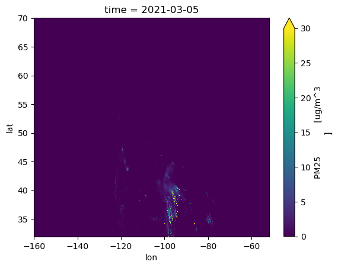
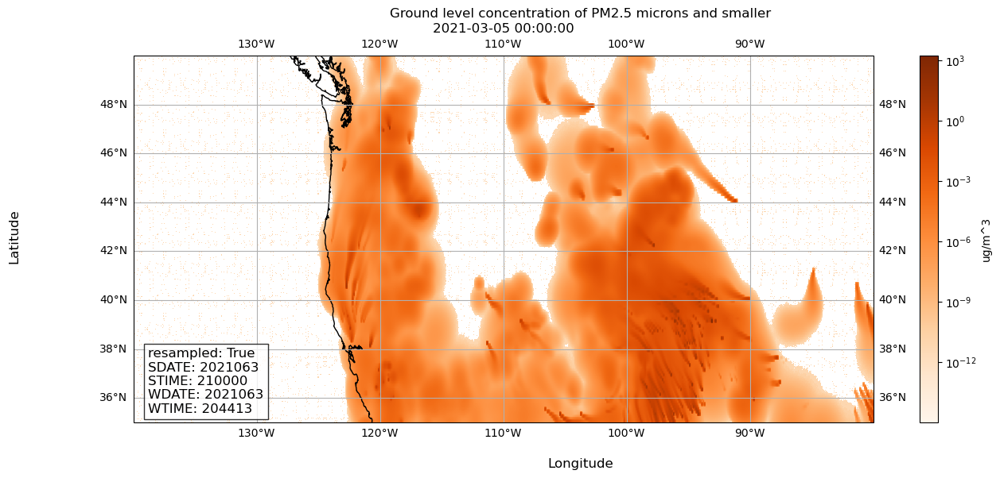

1.0.1 WIRED Global Center + National Science Data Fabric collaboration: Jupyter Notebook using 3 years of smoke forecast data over US and Canada stored in the cloud and dsitributed via regular internet connection.
# for numerical workimport numpy as np# for accessing file systemimport os# for loading netcdf files, for metadataimport xarray as xr# for connecting OpenVisus framework to xarray# from https://github.com/sci-visus/openvisuspy, from openvisuspy.xarray_backend import OpenVisusBackendEntrypoint# Used for processing netCDF time dataimport timeimport datetimeimport requests# Used for indexing via metadataimport pandas as pd# for plottingimport matplotlib.pyplot as pltimport cartopy.crs as ccrs#Stores the OpenVisus cache in the local direcrtory import osos.environ["VISUS_CACHE"]="./visus_cache_can_be_erased"os.environ['CURL_CA_BUNDLE'] =''
1.3Step 2: Reading the data & metadata from file
1.3.1 In this section, we load our data using xr.open_dataset.
Code
# path to tiny NetCDFurl ='https://github.com/sci-visus/NSDF-WIRED/raw/main/data/firesmoke_metadata.nc'# Download the file using requestsresponse = requests.get(url)local_netcdf ='firesmoke_metadata.nc'withopen(local_netcdf, 'wb') as f: f.write(response.content)# open tiny netcdf with xarray and OpenVisus backendds = xr.open_dataset(local_netcdf, engine=OpenVisusBackendEntrypoint)
ov.LoadDataset(http://atlantis.sci.utah.edu/mod_visus?dataset=UBC_fire_smoke_BSC&cached=1)
PM25
Adding field PM25 shape [27357, 381, 1081, 21] dtype float32 labels ['time', 'ROW', 'COL', 'resolution'] Max Resolution 20
The concentration of particulate matter (PM2.5) for each time step, layer, row, and column in the spatial grid.
TFLAG
The date and time of each data point.
wrf_arw_init_time
The time at which this prediction’s weather forecast was initiated.
resampled
Whether this timestamp was resampled from a 381x1041 to 381x1081 grid or not.
CDATE
The creation date of the data point, in YYYYDDD format.
CTIME
The creation time of the data point, in HHMMSS format.
WDATE
The date for which the weather forecast is initiated, in YYYYDDD format.
WTIME
The time for which the weather forecast is initiated, in HHMMSS format.
SDATE
The date for which the smoke forecast is initiated, in YYYYDDD format.
STIME
The time for which the weather forecast is initiated, in HHMMSS format.
1.4Step 2.5, Calculate derived metadata using original metadata above to create coordinates
1.4.1 This is required to allow for indexing of data via metadata
1.4.1.1 Calculate latitude and longitude grid
Code
# Get metadata to compute lon and latxorig = ds.XORIGyorig = ds.YORIGxcell = ds.XCELLycell = ds.YCELLncols = ds.NCOLSnrows = ds.NROWSlongitude = np.linspace(xorig, xorig + xcell * (ncols -1), ncols)latitude = np.linspace(yorig, yorig + ycell * (nrows -1), nrows)print("Size of longitude & latitude arrays:")print(f'np.size(longitude) = {np.size(longitude)}')print(f'np.size(latitude) = {np.size(latitude)}\n')print("Min & Max of longitude and latitude arrays:")print(f'longitude: min = {np.min(longitude)}, max = {np.max(longitude)}')print(f'latitude: min = {np.min(latitude)}, max = {np.max(latitude)}')
Size of longitude & latitude arrays:
np.size(longitude) = 1081
np.size(latitude) = 381
Min & Max of longitude and latitude arrays:
longitude: min = -160.0, max = -51.99999839067459
latitude: min = 32.0, max = 70.00000056624413
1.4.1.2 Using calculated latitude and longitude, create coordinates allowing for indexing data using lat/lon
Code
# Create coordinates for lat and lon (credit: Aashish Panta)ds.coords['lat'] = ('ROW', latitude)ds.coords['lon'] = ('COL', longitude)# Replace col and row dimensions with newly calculated lon and lat arrays (credit: Aashish Panta)ds = ds.swap_dims({'COL': 'lon', 'ROW': 'lat'})
1.4.1.3 Create coordinates allowing for indexing data using timestamp
1.4.1.3.1 First, convert tflags to timestamps that are compatible with xarray
Code
def parse_tflag(tflag):""" Return the tflag as a datetime object :param list tflag: a list of two int32, the 1st representing date and 2nd representing time """# obtain year and day of year from tflag[0] (date) date =int(tflag[0]) year = date //1000# first 4 digits of tflag[0] day_of_year = date %1000# last 3 digits of tflag[0]# create datetime object representing date final_date = datetime.datetime(year, 1, 1) + datetime.timedelta(days=day_of_year -1)# obtain hour, mins, and secs from tflag[1] (time) time =int(tflag[1]) hours = time //10000# first 2 digits of tflag[1] minutes = (time %10000) //100# 3rd and 4th digits of tflag[1] seconds = time %100# last 2 digits of tflag[1]# create final datetime object full_datetime = datetime.datetime(year, final_date.month, final_date.day, hours, minutes, seconds)return full_datetime
1.4.1.3.2 Return an array of the tflags as pandas timestamps
Code
# get all tflagstflag_values = ds['TFLAG'].values# to store pandas timestampstimestamps = []# convert all tflags to pandas timestamps, store in timestamps listfor tflag in tflag_values: timestamps.append(pd.Timestamp(parse_tflag(tflag[0])))# check out the first 3 timestampstimestamps[0:3]
# set coordinates to each timestep with these pandas timestampsds.coords['time'] = ('time', timestamps)
1.4.1.4 The timestamps may not be intuitive. The following utility function returns the desired pandas timestamp based on your date and time of interest.
1.4.1.4.1 When you index the data at a desired time, use this function to get the timestamp you need to index.
Code
def get_timestamp(year, month, day, hour):""" return a pandas timestamp using the given date-time arguments :param int year: year :param int month: month :param int day: day :param int hour: hour """# Convert year, month, day, and hour to a datetime object full_datetime = datetime.datetime(year, month, day, hour)# Extract components from the datetime object year = full_datetime.year day_of_year = full_datetime.timetuple().tm_yday hours = full_datetime.hour minutes = full_datetime.minute seconds = full_datetime.second# Compute tflag[0] and tflag[1] tflag0 = year *1000+ day_of_year tflag1 = hours *10000+ minutes *100+ seconds# Return the Pandas Timestamp objectreturn pd.Timestamp(full_datetime)
1.5Step 3: Select a data_slice
1.5.1 This section shows you how to load the data you want.
1.5.1.1 You can index the data using indices, timestamps*, latitude & longitude, and by desired resolution**.
*Not setting any time means the first timestep available is selected. **Not setting quality means full data resolution is selected.
1.5.1.1.1 In this case, let’s get all available firesmoke data for March 5, 2021 00:00:00 and the time and date for which it’s weather and smoke forecast were initiated.
Code
# select timestampmy_timestamp = get_timestamp(2021, 3, 5, 0)# select resolution, let's use full resolution since data isn't too big at one time slice# data resolution can be -19 for lowest res and 0 for highest resdata_resolution =0# get PM25 values and provide 4 values, the colons mean select all lat and lon indicesdata_array_at_time = ds['PM25'].loc[my_timestamp, :, :, data_resolution]# the metadata specifying weather and smoke forecast initialization timesresampled = ds['resampled'].loc[my_timestamp]sdate = ds['SDATE'].loc[my_timestamp]stime = ds['STIME'].loc[my_timestamp]wdate = ds['WDATE'].loc[my_timestamp]wtime = ds['WTIME'].loc[my_timestamp]# notice, to access the data, you must append ".values" to the data array we got aboveprint(f'timestamp: {my_timestamp}')print(f'resampled: {resampled.values} (boolean)')print(f'SDATE is {sdate.values} (YYYYDDD)')print(f'STIME is {stime.values} (HHMMSS)')print(f'WDATE is {wdate.values} (YYYYDDD)')print(f'WTIME is {wtime.values} (HHMMSS)')print(f'shape of data_array_at_time.values = {np.shape(data_array_at_time.values)}')
timestamp: 2021-03-05 00:00:00
resampled: True (boolean)
SDATE is 2021063 (YYYYDDD)
STIME is 210000 (HHMMSS)
WDATE is 2021063 (YYYYDDD)
WTIME is 204413 (HHMMSS)
Using Max Resolution: 20
Time: 24, max_resolution: 20, logic_box=(0, 1081, 0, 381), field: PM25
shape of data_array_at_time.values = (381, 1081)
1.5.1.1.2 Perhaps we want to slice a specific latitude longitude range from our data_array_at_time, for example, latitude range [35, 50] and longitude range [-140, -80]. Let’s do that below.
Code
# # define range for latitude and longitude to usemin_lat =35max_lat =50min_lon =-140max_lon =-80# get PM25 values and provide 4 values, but this time at our desired rangesdata_array_at_latlon = ds['PM25'].loc[my_timestamp, min_lat:max_lat, min_lon:max_lon, data_resolution]# notice, to access the data, you must append ".values" to the data array we got aboveprint(f'timestamp: {my_timestamp}')print(f'shape of data_array_at_time.values = {np.shape(data_array_at_latlon.values)}')
timestamp: 2021-03-05 00:00:00
Using Max Resolution: 20
Time: 24, max_resolution: 20, logic_box=(200, 800, 30, 180), field: PM25
shape of data_array_at_time.values = (150, 600)
We show how to obtain this attribute information for a time step of one’s choice, let’s use
1.5.1.2 The following are the max and min timestamps, lon/lat values, and data resolutions you can index by
1.5.1.2.1 Be sure you index within the data range, otherwise you may get errors since no data exists outside these ranges!
Code
# NOTE: there is one dummy date, ignore ds['time'].values[-1]print(f"earliest valid timestamp is: {ds['time'].values[0]}")print(f"latest valid timestamp is: {ds['time'].values[-2]}\n")print(f"valid longitude range is: {ds['lon'].values[0]}, {ds['lon'].values[-1]}")print(f"valid latitude range is: {ds['lat'].values[0]}, {ds['lat'].values[-1]}\n")print(f"valid data resolutions range is: [-19, 0]")
earliest valid timestamp is: 2021-03-04T00:00:00.000000000
latest valid timestamp is: 2024-06-27T22:00:00.000000000
valid longitude range is: -160.0, -51.99999839067459
valid latitude range is: 32.0, 70.00000056624413
valid data resolutions range is: [-19, 0]
1.6Step 4: Visualize data_slice
1.6.1 One can visualize the data either by:
1.6.2 1. Get the values from your data_array_at_time and plot using your favorite python visualization library. We’ll use matplotlib.
1.7 #### 2. Use xarray’s built in plotting function (not recommended, as it is not robust)
Here we plot data_array_at_time with matplotlib and its basemap extenstion to add geographic context.
Code
# Let's use matplotlib's imshow, since our data is on a grid# ref: https://matplotlib.org/stable/api/_as_gen/matplotlib.pyplot.imshow.html# Initialize a figure and plot, so we can customize figure and plot of data# ref: https://matplotlib.org/stable/api/_as_gen/matplotlib.pyplot.subplots.html# ref: https://scitools.org.uk/cartopy/docs/latest/getting_started/index.htmlmy_fig, my_plt = plt.subplots(figsize=(15, 6), subplot_kw=dict(projection=ccrs.PlateCarree()))# Let's set some parameters to get the visualization we want# ref: https://matplotlib.org/stable/api/_as_gen/matplotlib.pyplot.imshow.html# color PM25 values on a log scale, since values are smallmy_norm ="log"# this will number our x and y axes based on the longitude latitude rangemy_extent = [np.min(longitude), np.max(longitude), np.min(latitude), np.max(latitude)]# ensure the aspect ratio of our plot fits all data, matplotlib can does this automaticallymy_aspect ='auto'# tell matplotlib, our origin is the lower-left cornermy_origin ='lower'# select a colormap for our plot and the color bar on the rightmy_cmap ='Oranges'# create our plot using imshowplot = my_plt.imshow(data_array_at_time.values, norm=my_norm, extent=my_extent, aspect=my_aspect, origin=my_origin, cmap=my_cmap)# draw coastlinesmy_plt.coastlines()# draw latitude longitude lines# ref: https://scitools.org.uk/cartopy/docs/latest/gallery/gridlines_and_labels/gridliner.htmlmy_plt.gridlines(draw_labels=True)# add a colorbar to our figure, based on the plot we just made abovemy_fig.colorbar(plot,location='right', label='ug/m^3')# Add metadata as text annotationsmetadata_text = (f'resampled: {resampled.values}\n'f'SDATE: {sdate.values}\n'f'STIME: {stime.values}\n'f'WDATE: {wdate.values}\n'f'WTIME: {wtime.values}')# Place metadata text on the plotmy_plt.text(0.02, 0.02, metadata_text, transform=my_plt.transAxes, fontsize=12, verticalalignment='bottom', bbox=dict(facecolor='white', alpha=0.8))# Set x and y axis labels on our axmy_fig.supxlabel('Longitude')my_fig.supylabel('Latitude')# Set title of our figuremy_fig.suptitle('Ground level concentration of PM2.5 microns and smaller')# Set title of our plot as the timestamp of our datamy_plt.set_title(f'{my_timestamp}')# Show the resulting visualizationplt.show()
Here we plot with xarray’s built-in matplotlib powered plotter.
Code
data_array_at_time.plot(vmin=0, vmax=30)

Here we plot data_array_at_latlon. We use the exact same code, but define my_extent accordingly.
Code
# Let's use matplotlib's imshow, since our data is on a grid# ref: https://matplotlib.org/stable/api/_as_gen/matplotlib.pyplot.imshow.html# Initialize a figure and plot, so we can customize figure and plot of data# ref: https://matplotlib.org/stable/api/_as_gen/matplotlib.pyplot.subplots.htmlmy_fig, my_plt = plt.subplots(figsize=(15, 6), subplot_kw=dict(projection=ccrs.PlateCarree()))# Let's set some parameters to get the visualization we want# ref: https://matplotlib.org/stable/api/_as_gen/matplotlib.pyplot.imshow.html# color PM25 values on a log scale, since values are smallmy_norm ="log"# ***this will number our x and y axes based on the longitude latitude range***my_extent = [min_lon, max_lon, min_lat, max_lat]# ensure the aspect ratio of our plot fits all data, matplotlib can does this automaticallymy_aspect ='auto'# tell matplotlib, our origin is the lower-left cornermy_origin ='lower'# select a colormap for our plot and the color bar on the rightmy_cmap ='Oranges'# create our plot using imshowplot = plt.imshow(data_array_at_latlon.values, norm=my_norm, extent=my_extent, aspect=my_aspect, origin=my_origin, cmap=my_cmap)# draw coastlinesmy_plt.coastlines()# draw latitude longitude lines# ref: https://scitools.org.uk/cartopy/docs/latest/gallery/gridlines_and_labels/gridliner.htmlmy_plt.gridlines(draw_labels=True)# add a colorbar to our figure, based on the plot we just made abovemy_fig.colorbar(plot,location='right', label='ug/m^3')# Add metadata as text annotationsmetadata_text = (f'resampled: {resampled.values}\n'f'SDATE: {sdate.values}\n'f'STIME: {stime.values}\n'f'WDATE: {wdate.values}\n'f'WTIME: {wtime.values}')# Place metadata text on the plotmy_plt.text(0.02, 0.02, metadata_text, transform=my_plt.transAxes, fontsize=12, verticalalignment='bottom', bbox=dict(facecolor='white', alpha=0.8))# Set x and y axis labels on our axmy_fig.supxlabel('Longitude')my_fig.supylabel('Latitude')# Set title of our figuremy_fig.suptitle('Ground level concentration of PM2.5 microns and smaller')# Set title of our plot as the timestamp of our datamy_plt.set_title(f'{my_timestamp}')# Show the resulting visualizationplt.show()

Code
data_array_at_latlon.plot(vmin=0, vmax=30)
1.7.1Please reach out to Arleth Salinas or Valerio Pascucci for any concerns about the notebook. Thank you!